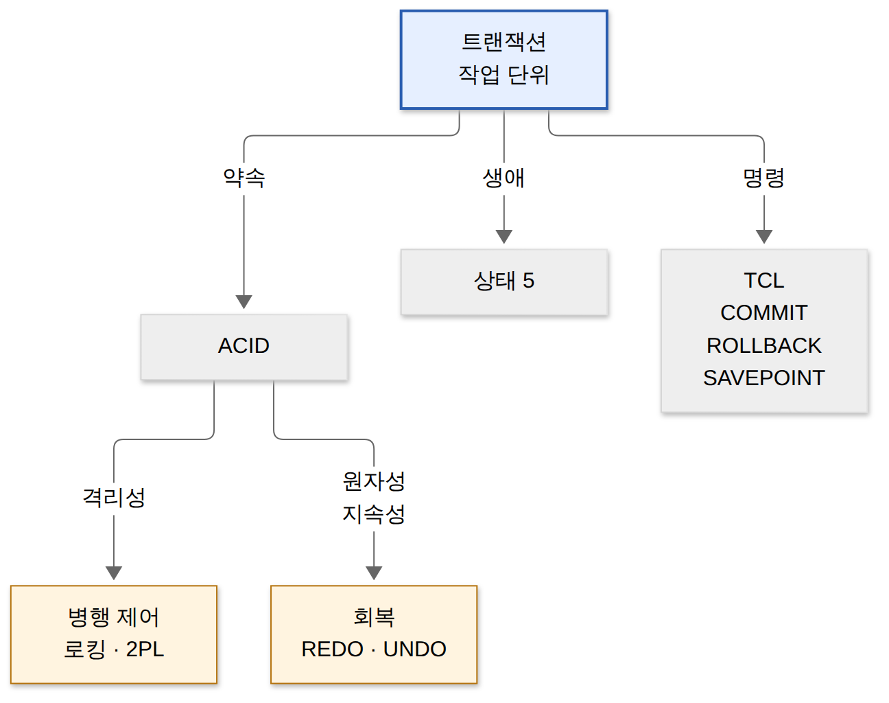
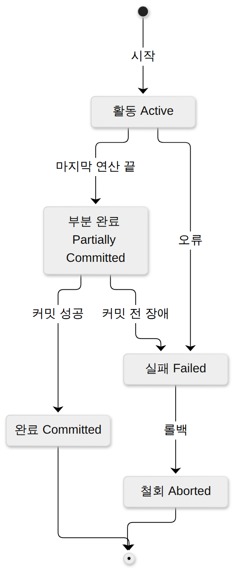
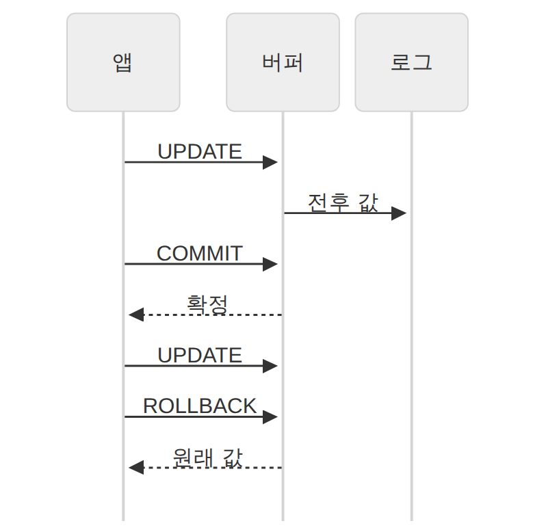
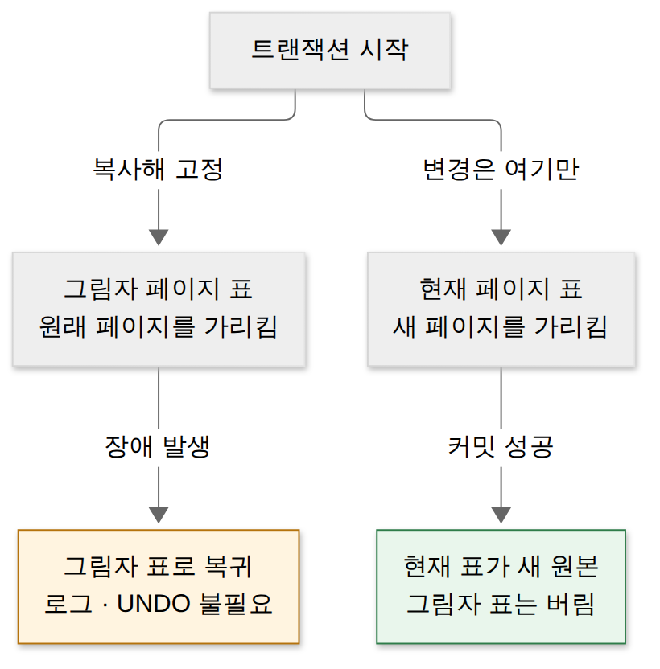
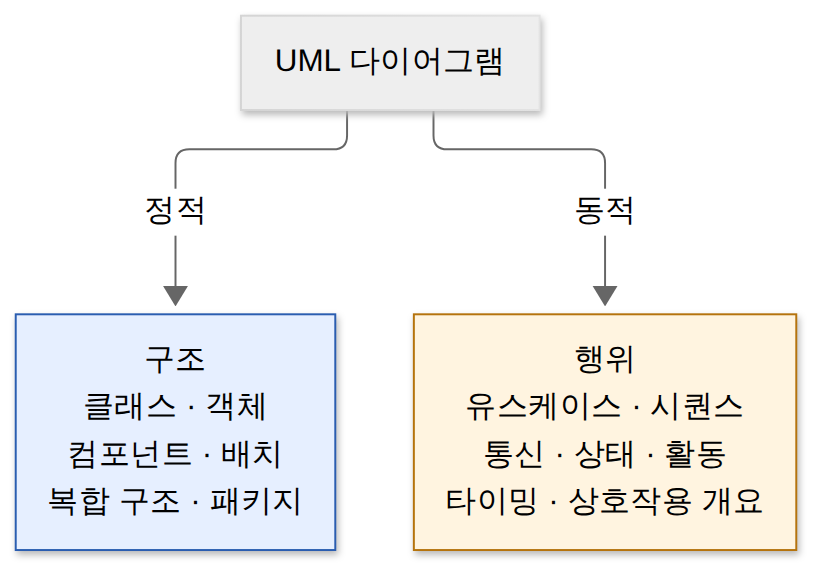

D031 · 트랜잭션: ACID·상태·COMMIT/ROLLBACK/SAVEPOINT·병행제어·회복
B2 토요일 D029에서 테이블을 만들고(DDL) 지우는 법을 봤어요. 오늘은 그 테이블에 여러 SQL을 한 묶음으로 실행할 때의 약속, 트랜잭션이에요. 예시는 스터디 앱 ‘공부친구’에서 지민이 친구에게 스터디 포인트 300점을 선물하는 장면 하나를 끝까지 따라가요.
- 트랜잭션 ACID 4성질과 각각을 지키는 기능(회복·무결성 제약·병행 제어)을 짝지을 수 있다
- 트랜잭션 상태 5가지(활동·부분 완료·완료·실패·철회)의 흐름을 설명할 수 있다
- COMMIT·ROLLBACK·SAVEPOINT 실행 뒤 테이블에 무엇이 남는지 추적할 수 있다
- 병행 제어(로킹·2PL·타임스탬프·낙관적 검증)와 회복(REDO·UNDO, 지연·즉시 갱신, 검사점, 그림자 페이징)을 구별할 수 있다
1부 (약 14분)
2부 (약 16분)
1. 큰 그림 — 셋 중 하나만 되면 사고다
지민이 친구에게 포인트 300점을 선물하면 DB에서는 SQL 세 줄이 돌아요. 지민의 포인트를 300 깎고, 친구의 포인트를 300 올리고, 선물 내역을 한 줄 남겨요. 문제는 이 셋이 서로 다른 순간에 실행된다는 점이에요. 첫 줄이 끝난 직후 서버가 꺼지면 지민의 포인트는 빠졌는데 친구는 받지 못해, 300점이 우주로 증발해요.
그래서 DBMS는 “이 세 줄은 한 몸”이라고 선언할 수 있게 해 줘요. 이렇게 데이터베이스의 상태를 바꾸기 위해 한꺼번에 수행해야 하는 연산들의 묶음, 즉 논리적 작업 단위가 트랜잭션(Transaction)이에요. 트랜잭션은 그 증발을 막는 진공 포장이에요. 포장째 배달되거나, 포장째 반송되거나 둘 중 하나죠.
트랜잭션이 필요한 이유는 크게 둘이에요. 하나는 중간 장애(정전, 프로세스 종료, 디스크 오류)이고, 다른 하나는 동시 접속이에요. 수많은 사용자가 같은 포인트 행을 동시에 건드리면, 각자는 올바른 SQL을 실행해도 합쳐진 결과가 틀릴 수 있어요. 오늘 페이지의 뒤쪽 두 장면(병행 제어·회복)이 이 두 위협에 대한 DBMS의 대답이에요.
D029에서 SQL을 네 갈래로 나눴던 걸 떠올려 보세요. 테이블 모양을 다루는 DDL, 행을 다루는 DML, 권한을 다루는 DCL, 그리고 작업 묶음을 확정·취소하는 TCL(Transaction Control Language)이었죠. 오늘 나오는 COMMIT·ROLLBACK·SAVEPOINT가 바로 그 TCL이에요. 교재에 따라 이 명령들을 DCL에 함께 넣기도 하는데, 그 분류 차이는 내일 D032에서 정리해요.
처음 보는 용어가 많으니 먼저 한 장으로 모아 둘게요. 표의 단어는 아래 장면에서 하나씩 다시 자세히 설명해요.
| 용어 | 뜻 | 포인트 선물에서 |
|---|---|---|
| 커밋(COMMIT) | 트랜잭션의 결과를 DB에 영구 확정 | 세 줄이 다 끝나고 “선물 완료” 확정 |
| 롤백(ROLLBACK) | 트랜잭션이 한 일을 모두 취소하고 시작 전 상태로 | 친구 계정이 정지돼 선물 취소 |
| 로그(Log) | DB를 바꾼 기록(무엇을, 바꾸기 전 값, 바꾼 뒤 값) | “지민 1000 → 700” 기록 |
| 버퍼 | 디스크에 쓰기 전 데이터를 잠시 두는 메모리 | 깎인 700이 아직 메모리에만 있음 |
| 락(Lock) | 다른 트랜잭션이 같은 데이터에 접근하지 못하게 거는 자물쇠 | 지민 행을 잠그고 계산 |
| 장애 | 트랜잭션이 정상적으로 끝나지 못하게 하는 사건 | 두 번째 줄 실행 중 정전 |
오늘 배울 덩어리들이 서로 어떻게 매달려 있는지 지도로 먼저 보고 시작해요. 트랜잭션에서 세 가지(약속·생애·명령)가 나오고, 약속 중 격리성은 병행 제어가, 원자성과 지속성은 회복이 책임져요.

→ 이 장면의 결과물: “포인트 선물 세 줄은 한 트랜잭션”이라는 묶음. 그래서 다음 장면은 이 묶음이 꼭 지켜야 할 네 가지 약속이에요.
2. 장면 1 — 트랜잭션이 지켜야 할 네 약속 (ACID)
앞에서 세 줄을 한 묶음으로 만들었어요. 그런데 “묶었다”는 말만으로는 부족해요. 장애가 나면? 동시에 두 명이 선물하면? 커밋 직후 서버가 꺼지면? 이런 질문마다 DBMS가 약속해 둔 답이 있고, 그 약속 네 개의 머리글자가 ACID예요.
원자성(Atomicity)
트랜잭션의 연산은 모두 반영되거나 전혀 반영되지 않아야 한다는 성질이에요(All or Nothing). 포인트 선물이 두 번째 줄에서 멈췄다면 첫 줄까지 되돌려 없던 일로 만들어야 해요. 원자성은 ‘반쯤 결혼’이 없는 것과 같아요. 식을 다 올리거나, 아예 없던 일이거나. 이 되돌리기는 장애 뒤 로그를 보고 처리하므로 회복 기법이 원자성을 지켜요.
일관성(Consistency)
트랜잭션이 끝난 뒤에도 DB가 정해 둔 규칙(무결성 제약)을 만족하는 일관된 상태여야 한다는 성질이에요. ‘공부친구’에 “포인트는 0 미만이 될 수 없다(CHECK)”는 규칙이 있다면, 잔액 200점인 지민이 300점을 선물하는 트랜잭션은 성공하면 안 돼요. 또 선물 전후로 두 사람 포인트의 합이 같아야 하죠. D029의 제약조건(PK·FK·CHECK 등)이 이 약속의 도구예요.
격리성(Isolation)
동시에 실행되는 트랜잭션들이 서로의 중간 결과에 끼어들 수 없어야 한다는 성질이에요. 고립성·독립성이라고도 불러요. 지민의 선물이 아직 커밋되기 전이라면, 다른 트랜잭션이 깎인 700을 보고 계산해서는 안 돼요. 이 칸막이를 세우는 게 장면 4의 병행 제어(로킹 등)예요.
지속성(Durability)
커밋된 결과는 장애가 나도 영구히 남아야 한다는 성질이에요. 영속성이라고도 불러요. “선물 완료” 화면이 뜬 직후 서버가 꺼져도, 다시 켜면 친구 포인트는 올라가 있어야 해요. 커밋된 내용이 아직 버퍼에만 있었다면 로그로 다시 써 넣어야 하니, 지속성도 회복 기법이 지켜요.
시험에서는 성질 이름보다 “누가 이 성질을 지키나” 짝이 더 자주 흔들려요. 출제자는 ACID 이름 네 개 외운 사람과 짝까지 외운 사람을 가르고 싶어 하거든요. 원자성과 지속성은 둘 다 ‘장애 뒤 처리’라 같은 회복 쪽이고, 격리성만 ‘동시성’ 문제라 병행 제어 쪽이라는 구조로 기억하면 헷갈리지 않아요. 일관성은 교재에 따라 무결성 제약과 병행 제어를 함께 적기도 하는데, 시험에서 가장 자주 묻는 짝은 격리성–병행 제어예요.
한 장 요약 — 위 네 문단을 표로 모으면 이렇게 돼요.
| 성질 | 뜻 | 깨지면 생기는 일 | 지키는 기능 |
|---|---|---|---|
| 원자성 (Atomicity) | 전부 반영 또는 전부 취소 | 지민만 깎이고 친구는 못 받음 | 회복 |
| 일관성 (Consistency) | 끝난 뒤에도 규칙(제약) 만족 | 잔액이 음수, 포인트 합이 달라짐 | 무결성 제약 |
| 격리성 (Isolation) · 고립성·독립성 | 동시 실행 중 서로의 중간 결과에 간섭 안 함 | 커밋 전 700을 다른 작업이 읽음 | 병행 제어 |
| 지속성 (Durability) · 영속성 | 커밋된 결과는 영구 보존 | 완료 화면 뒤 재시작했더니 선물이 사라짐 | 회복 |
→ 이 장면의 결과물: 묶음이 지킬 네 약속과 그 담당자. 그래서 다음 장면은 이 묶음이 시작부터 끝까지 어떤 상태를 지나는지예요.
3. 장면 2 — 끝까지 실행했다고 끝난 게 아니다 (트랜잭션 상태)
장면 1의 약속을 지키려면 DBMS가 지금 트랜잭션이 어디까지 왔는지 알아야 해요. 그래야 장애가 났을 때 “이건 확정해야 하나, 되돌려야 하나”를 판단할 수 있죠. 그래서 트랜잭션은 다섯 상태 중 하나에 있어요.
활동(Active)은 트랜잭션이 시작돼 연산을 실행하고 있는 상태예요. 지민 포인트를 깎고 친구 포인트를 올리는 중이죠. 부분 완료(Partially Committed)는 마지막 연산까지 실행을 마쳤지만 아직 커밋이 확정되기 직전인 상태예요. 세 번째 INSERT까지 끝났지만, 결과를 영구 저장했다는 확인은 아직이에요.
완료(Committed)는 커밋에 성공해 결과가 확정된 상태예요. 이제 지속성 약속이 적용돼요. 실패(Failed)는 오류나 장애로 더 진행할 수 없다고 판단된 상태이고, 철회(Aborted)는 롤백을 끝내 트랜잭션 시작 전 상태로 되돌린 상태예요. 철회된 트랜잭션은 다시 시작하거나 그대로 버려요.
가장 많이 틀리는 곳이 부분 완료예요. 부분 완료는 답안지를 다 쓰고 손을 든 상태예요. 감독관이 걷어 가기(커밋) 전에 정전이 나면 그 답안은 없던 게 돼요. 그래서 부분 완료에서도 실패로 가는 화살표가 있어요.

→ 이 장면의 결과물: 트랜잭션의 위치를 알려 주는 다섯 칸. 그래서 다음 장면은 이 칸을 개발자가 직접 움직이는 명령, COMMIT·ROLLBACK·SAVEPOINT예요.
4. 장면 3 — 저장 버튼과 되돌리기 (COMMIT · ROLLBACK · SAVEPOINT)
장면 2에서 트랜잭션이 완료나 철회로 끝난다고 했죠. 그 끝을 개발자가 정하는 명령이 TCL이에요. 포인트 선물을 SQL로 쓰면 아래처럼 돼요(자동 커밋을 끈 상태 기준).
-- 공부친구: 지민(M01) → 친구(M02)에게 300점 선물
UPDATE 회원 SET 포인트 = 포인트 - 300 WHERE 회원번호 = 'M01';
UPDATE 회원 SET 포인트 = 포인트 + 300 WHERE 회원번호 = 'M02';
INSERT INTO 선물내역 VALUES ('G101', 'M01', 'M02', 300);
COMMIT; -- 세 줄을 한꺼번에 확정
-- 중간에 친구 계정이 정지된 걸 알았다면
ROLLBACK; -- 마지막 COMMIT 이후 한 일을 모두 취소COMMIT은 트랜잭션이 한 일을 DB에 영구히 확정하고 트랜잭션을 끝내는 명령이에요. 커밋 뒤에는 ROLLBACK으로 되돌릴 수 없어요. 상태 그림에서 부분 완료를 완료로 넘기는 버튼이죠. ROLLBACK은 마지막 커밋 이후의 변경을 모두 취소해 트랜잭션 시작 전으로 돌리고 끝내는 명령이에요. 상태 그림의 실패 → 철회 화살표예요.
아래 시퀀스는 두 명령이 DB 안에서 어떻게 다른지 보여 줘요. 변경은 먼저 버퍼와 로그에 쌓이고, 커밋은 그 결과를 확정 짓고, 롤백은 버퍼의 값을 바꾸기 전 값으로 되돌려요.

SAVEPOINT는 트랜잭션 중간에 이름 붙인 저장점을 만드는 명령이고, ROLLBACK TO 저장점은 그 저장점 이후의 작업만 취소해요. 중요한 건 ROLLBACK TO는 트랜잭션을 끝내지 않는다는 점이에요. 저장점 앞의 작업은 아직 커밋되지 않은 채 살아 있고, 뒤에 COMMIT을 해야 확정돼요.
SAVEPOINT는 게임 중간 저장이에요. 보스전에서 지면 마을이 아니라 보스방 앞에서 다시 시작하죠. 다만 게임을 끄는(COMMIT이나 ROLLBACK) 순간 중간 저장은 사라져요. 아래 그림처럼 한 단계씩 추적하면 시험의 ‘남은 행 찾기’ 문제가 풀려요.
INSERT INTO T VALUES (1); -- T: 1
SAVEPOINT s1;
INSERT INTO T VALUES (2); -- T: 1, 2
SAVEPOINT s2;
DELETE FROM T WHERE id = 1; -- T: 2
ROLLBACK TO s1; -- s1 이후 취소 → T: 1
COMMIT; -- 1 확정한 장 요약 — 네 명령을 효과와 ‘뒤에 되돌릴 수 있나’로 모았어요.
| 명령 | 효과 | 트랜잭션은? |
|---|---|---|
| COMMIT | 변경을 영구 확정(이후 ROLLBACK 불가) | 끝남 |
| ROLLBACK | 마지막 커밋 이후 변경을 모두 취소 | 끝남 |
| SAVEPOINT 이름 | 현재 위치에 저장점 표시(데이터 변화 없음) | 계속 |
| ROLLBACK TO 이름 | 그 저장점 이후 변경만 취소 | 계속(나중에 COMMIT 필요) |
현업에서는 자동 커밋(auto-commit)이 켜진 채로 일하는 경우가 많아요. 그러면 SQL 한 줄마다 COMMIT이 붙어 ROLLBACK할 틈이 없어요. 스프링의 @Transactional이 하는 일이 바로 이 자동 커밋을 끄고 메서드 전체를 한 트랜잭션으로 감싸, 예외가 나면 ROLLBACK하는 거예요. 또 D029에서 본 것처럼 오라클은 CREATE·DROP 같은 DDL을 실행하면 그 자리에서 자동 커밋돼요.
→ 이 장면의 결과물: 한 사람의 트랜잭션을 확정·취소하는 법. 그래서 다음 장면은 여러 사람의 트랜잭션이 같은 행을 동시에 만질 때예요.
5. 장면 4 — 같은 포인트를 둘이 동시에 만질 때 (병행 제어)
장면 3까지는 트랜잭션이 하나뿐인 세상이었어요. 실제 앱에서는 수천 명이 동시에 요청을 보내요. 트랜잭션을 하나씩 줄 세워 실행하면(직렬 실행) 안전하지만 너무 느려요. 그래서 DBMS는 여러 트랜잭션을 섞어 실행(병행 수행)해 처리량을 높이고 응답 시간을 줄이되, 결과는 직렬로 실행한 것과 같게 만들어요. 그 조율이 병행 제어(동시성 제어)이고, 장면 1의 격리성을 지키는 담당자예요.
병행 수행에서 생기는 문제 4가지
갱신 분실(Lost Update)은 두 트랜잭션이 같은 값을 읽고 각자 고쳐 쓰는 바람에, 먼저 쓴 쪽의 결과가 덮여 사라지는 현상이에요. 1000점을 가진 지민이 두 친구에게 동시에 300점씩 선물하면 400점이 남아야 하는데, 둘 다 1000을 읽고 700을 쓰면 700이 남아요. 같은 칠판에 각자 계산한 답을 쓰면 나중에 쓴 사람 답만 남는 것과 같아요. 먼저 쓴 사람은 일을 했는데 흔적이 없죠.
비완료 의존성(Uncommitted Dependency)은 아직 커밋되지 않은 값을 다른 트랜잭션이 읽었는데, 그 트랜잭션이 롤백돼 버려 읽은 값이 존재하지 않던 값이 되는 현상이에요. 흔히 더티 리드(Dirty Read)라고 불러요. 깎인 700을 보고 “잔액 부족” 알림을 보냈는데 선물이 취소되면, 알림은 유령 숫자를 보고 보낸 셈이에요.
모순성(Inconsistency)은 한 트랜잭션이 여러 값을 읽는 도중 다른 트랜잭션이 그 값들을 바꿔, 읽은 결과끼리 앞뒤가 맞지 않는 현상이에요. 전체 포인트 합계를 내는 도중 선물이 오가면, 지민은 선물 전 값으로, 친구는 선물 후 값으로 더해져 합계가 300점 부풀어요. 연쇄 복귀(Cascading Rollback)는 한 트랜잭션이 롤백될 때 그 트랜잭션의 커밋 전 값을 읽은 다른 트랜잭션들까지 줄줄이 롤백해야 하는 현상이에요.
한 장 요약 — 네 문제를 ‘공부친구’ 장면으로 묶었어요.
| 문제 | 한 줄 뜻 | 공부친구 장면 |
|---|---|---|
| 갱신 분실 | 나중에 쓴 값이 먼저 쓴 값을 덮음 | 동시 선물 두 건 → 300점 하나가 사라짐 |
| 비완료 의존성 (Dirty Read) | 커밋 안 된 값을 읽었는데 롤백됨 | 취소될 700을 보고 알림 발송 |
| 모순성 | 읽는 도중 값이 바뀌어 결과끼리 안 맞음 | 합계 계산 중 선물이 오가 합이 부풂 |
| 연쇄 복귀 | 하나의 롤백이 다른 트랜잭션 롤백을 부름 | 700을 읽은 작업들까지 줄줄이 취소 |
로킹과 락의 두 종류
가장 기본 대책은 로킹(Locking)이에요. 트랜잭션이 데이터를 쓰기 전에 자물쇠(lock)를 걸고, 다 쓰면 푸는(unlock) 방식이에요. 락이 걸린 데이터는 다른 트랜잭션이 기다려야 하니 갱신 분실이 사라져요. 락에는 두 종류가 있어요. 공유 락(Shared Lock, S)은 읽기용이라 여러 트랜잭션이 함께 걸 수 있고, 걸린 동안 누구도 쓰지 못해요. 배타 락(Exclusive Lock, X)은 쓰기용이라 건 트랜잭션만 읽고 쓸 수 있고, 다른 트랜잭션은 공유 락도 걸 수 없어요.
로킹 단위 — 자물쇠를 얼마나 크게 거나
로킹 단위는 락을 거는 데이터의 크기예요. DB 전체, 테이블(파일), 레코드(행), 필드(열) 순으로 작아져요. 단위가 크면 걸어야 할 락 수가 적어 관리 오버헤드가 줄지만, 한 번에 넓게 잠그니 다른 트랜잭션이 오래 기다려 병행성이 떨어져요. 단위가 작으면 그 반대예요. 지민 행 하나만 잠그면 다른 회원들의 선물은 그대로 진행되지만, DBMS가 관리할 락이 수만 개로 늘어요.
2단계 로킹 규약(2PL)
락을 쓰기만 해서는 충분하지 않아요. 락을 너무 일찍 풀었다가 다시 걸면 그 틈에 다른 트랜잭션이 끼어들어, 결과가 어떤 직렬 순서와도 같지 않게 될 수 있거든요. 그래서 나온 규칙이 2단계 로킹 규약(Two-Phase Locking)이에요. 트랜잭션은 확장 단계에서는 lock만 할 수 있고, 처음 unlock하는 순간 축소 단계로 넘어가 그 뒤로는 unlock만 할 수 있어요. 락이 가장 많은 꼭짓점을 락 포인트라고 해요.
2PL은 등산이에요. 올라가는 동안엔 열쇠를 줍기만, 정상을 찍고 내려올 땐 내려놓기만 해요. 내려가다 다시 줍는 건 반칙이에요. 이 규칙을 모든 트랜잭션이 지키면 결과가 어떤 직렬 실행과 같아지는 직렬 가능성(serializability)이 보장돼요. 하지만 서로 상대가 가진 락을 기다리는 교착상태(deadlock)는 막지 못해요.
락 말고 다른 방법들
타임스탬프 순서(Timestamp Ordering)는 트랜잭션이 시작될 때 시각표(타임스탬프)를 붙이고, 그 순서대로 실행된 것처럼 접근 순서를 정하는 방식이에요. 순서를 어기는 접근은 그 트랜잭션을 롤백시켜요. 락을 기다리지 않으니 교착상태가 생기지 않아요. 낙관적 검증(Optimistic Validation)은 실행 중에는 아무 검사 없이 진행하고, 끝날 때 한 번 다른 트랜잭션과 충돌했는지 검증하는 방식이에요. ‘설마 겹치겠어?’ 하고 일단 다 하고, 겹쳤으면 그때 다시 해요. JPA의 @Version 낙관적 락이 이 생각이에요.
다중 버전 병행 제어(MVCC)는 데이터를 고칠 때 이전 버전을 남겨 두고, 읽는 트랜잭션에게는 자기가 시작한 시점의 버전을 보여 주는 방식이에요. 읽기가 쓰기를 기다리지 않아 조회가 많은 서비스에 유리해요. 오라클·PostgreSQL·MySQL(InnoDB)이 이 방식을 써요.
한 장 요약 — 병행 제어 기법 넷을 핵심과 장단점으로 모았어요.
| 기법 | 핵심 | 장점 | 약점 |
|---|---|---|---|
| 로킹 (2PL) | 쓰기 전 락, 확장 → 축소 | 직렬성 보장, 이해 쉬움 | 교착상태 가능, 대기 |
| 타임스탬프 순서 | 시작 시각 순서대로 처리 | 교착상태 없음 | 순서 어기면 롤백이 잦음 |
| 낙관적 검증 | 끝에 한 번 충돌 검사 | 충돌 적을 때 빠름 | 충돌 많으면 재실행 반복 |
| 다중 버전 (MVCC) | 버전을 남겨 시점별로 읽음 | 읽기가 쓰기를 안 기다림 | 버전 저장 공간 필요 |
→ 이 장면의 결과물: 동시에 일해도 결과가 꼬이지 않는 규칙. 그래서 다음 장면은 남은 위협, 서버가 아예 꺼졌을 때예요.
6. 장면 5 — 서버가 꺼졌다 켜지면 (회복)
장면 4가 ‘동시성’이라는 위협을 다뤘다면, 이번엔 ‘장애’예요. 서버가 꺼지면 메모리(버퍼)의 내용은 사라지고 디스크와 로그만 남아요. 그때 DB에는 두 종류의 문제가 섞여 있어요. 커밋했지만 아직 디스크에 다 쓰지 못한 트랜잭션과, 커밋하지 못했는데 일부가 디스크에 써진 트랜잭션이에요. 회복(Recovery)은 장애가 난 DB를 장애 전의 올바른 상태로 되돌리는 일이에요.
REDO(재실행)는 로그에 남은 바꾼 뒤 값으로 커밋된 트랜잭션의 변경을 다시 써 넣는 연산이에요. 지속성을 지켜요. UNDO(취소)는 로그의 바꾸기 전 값으로 커밋되지 않은 트랜잭션의 변경을 지우는 연산이에요. 원자성을 지켜요. 장면 1에서 “원자성·지속성은 회복이 담당”이라고 한 이유가 이 두 연산이에요.
검사점(Checkpoint)
로그를 처음부터 끝까지 다시 읽으면 회복이 너무 오래 걸려요. 그래서 DBMS는 주기적으로 버퍼의 내용을 디스크에 모두 쓰고 “여기까지는 디스크에 반영됨”이라는 검사점을 로그에 찍어요. 장애가 나면 최근 검사점부터만 살펴보면 돼요. 검사점 전에 커밋된 트랜잭션은 이미 디스크에 있으니 무시하고, 검사점 뒤에 커밋된 것은 REDO, 장애 때까지 커밋 못 한 것은 UNDO해요.
지연 갱신과 즉시 갱신
지연 갱신(연기 갱신, Deferred Update)은 트랜잭션이 실행되는 동안에는 변경을 로그에만 적고, 커밋된 뒤에야 DB에 반영하는 방식이에요. 커밋 전에 장애가 나도 DB는 건드린 적이 없으니 UNDO가 필요 없고, 커밋됐는데 반영 못 한 것만 REDO해요. 장바구니에 담아만 두고 결제 버튼 전에는 창고에서 꺼내지 않는 것과 같아요. 결제 전에 쓰러져도 창고는 멀쩡하니 되돌릴 게 없어요.
즉시 갱신(Immediate Update)은 트랜잭션 실행 중에 변경을 곧바로 DB에 반영하되, 반영하기 전에 전후 값을 로그에 먼저 적는 방식이에요. 커밋 전에 장애가 나면 이미 DB에 들어간 것을 지워야 하니 UNDO, 커밋된 것은 REDO, 둘 다 필요해요.
그림자 페이징과 미디어 회복
그림자 페이징(Shadow Paging)은 로그 대신 페이지 표를 두 벌 두는 방식이에요. 트랜잭션이 시작되면 현재 페이지 표를 복사해 그림자 페이지 표로 고정해 두고, 변경은 새 페이지에 써서 현재 페이지 표만 그쪽을 가리키게 해요. 커밋하면 현재 표가 새 원본이 되고, 장애가 나면 그림자 표로 돌아가면 끝이에요. 원본 문서는 그대로 두고 복사본에 고치다가, 망하면 복사본을 찢어 버리는 방식이라 로그도, REDO·UNDO도 필요 없어요.

미디어 회복은 디스크 자체가 망가진 경우의 회복이에요. 로그만으로는 부족하니 주기적으로 떠 둔 덤프(백업 복사본)를 새 디스크에 복원하고, 그 뒤의 커밋된 변경을 로그로 REDO해요. 어떤 기법인지 헷갈리면 아래 사다리에 질문을 차례로 던져 보세요.
한 장 요약 — 다섯 기법을 ‘언제 DB에 반영하나’와 ‘무엇이 필요하나’로 모았어요.
| 기법 | DB 반영 시점 | 로그 | REDO | UNDO |
|---|---|---|---|---|
| 지연(연기) 갱신 | 커밋 후 | 사용 | 필요 | 불필요 |
| 즉시 갱신 | 실행 중 바로 | 사용 | 필요 | 필요 |
| 검사점 | 검사점마다 버퍼를 디스크로 | 사용 | 검사점 뒤 커밋분 | 미완료분 |
| 그림자 페이징 | 새 페이지에 쓰고 커밋 때 표 교체 | 불필요 | 불필요 | 불필요 |
| 미디어 회복 | 덤프 복원 후 | 사용 | 필요 | — |
→ 이 장면의 결과물: 꺼졌다 켜져도 커밋은 남고 미완료는 사라지는 DB. 오늘 트랜잭션 이야기는 여기까지고, 다음은 오늘 다시 볼 오답이에요.
7. 오답 복습 — UI 원칙 · UML 두 갈래 · 상태 패턴
오늘은 트랜잭션 상태 그림을 그렸으니, 그 그림과 닮은 함정 셋을 함께 다시 봐요. 하나는 3주 전 UI 설계 원칙, 둘은 지난주의 UML·디자인 패턴이에요.
UI 설계 원칙 네 가지 (D007)
UI 설계 원칙은 직관성·유효성·학습성·유연성 넷이에요. 넷 다 ‘좋은 UI’라는 말이라 선지에서 섞이기 쉬워요. 가르는 질문은 “사용자의 무엇을 돕나”예요. 처음 보는 순간의 이해를 돕는지, 목적 달성을 돕는지, 다시 쓸 때의 기억을 돕는지, 여러 방식과 실수를 받아 주는지를 보면 하나로 정해져요.
| 원칙 | 가르는 질문 | 공부친구 예 |
|---|---|---|
| 직관성 | 처음 봐도 바로 알아보나? | 선물 버튼에 선물 상자 아이콘 |
| 유효성 | 목적을 정확하고 완전하게 이루나? | 선물 금액과 받는 사람이 정확히 처리 |
| 학습성 | 한 번 쓰면 쉽게 배우고 기억하나? | 두 번째 선물부터는 안내 없이 진행 |
| 유연성 | 여러 조작 방식을 받아 주고 실수를 막고 되돌릴 수 있나? | 터치·키보드·음성 모두 지원, 보내기 직전 취소 |
UML 다이어그램 두 갈래 (D022)
UML 다이어그램은 구조(정적)와 행위(동적)로 나뉘어요. 가르는 질문은 “시간이 흐르면 바뀌는 걸 그리나?”예요. 시스템의 뼈대와 배치를 한 장의 사진처럼 그리면 구조, 시간에 따라 일어나는 일과 변화를 그리면 행위예요. 상태 다이어그램은 이름에 ‘상태’가 있어 정적인 척하지만, 실은 오늘 트랜잭션 상태 그림처럼 시간에 따라 바뀌는 걸 그리는 행위 쪽이에요. 출제자가 노리는 게 바로 그 이름값이에요.

상태 패턴 vs 전략 패턴 (D014 · S02)
두 패턴은 클래스 그림이 거의 똑같아서 구조로는 구별이 안 돼요. 가르는 질문은 “누가 갈아 끼우나”예요. 전략 패턴은 바깥의 클라이언트가 “이번엔 이 알고리즘”이라고 골라 넣어요. 상태 패턴은 객체 안의 상태 객체가 일을 처리한 뒤 스스로 다음 상태로 넘겨, 같은 요청에도 행동이 저절로 달라져요. 오늘 트랜잭션이 활동에서 부분 완료로 넘어가는 걸 클라이언트가 고르지 않는 것과 같아요.
8. 시험 포인트 한 장 + 다음 예고
오늘 다섯 장면을 포인트 선물 하나로 다시 꿰면 아래 표가 돼요. 각 장면의 시험 개념이 무엇이고, 그 장면이 끝나면 무엇이 생기는지를 한 줄씩 적었어요. 시험 전날 밤엔 이 표가 커닝 페이퍼 역할을 해요. 다만 종이 대신 머릿속에 접어 들어가는 합법 버전으로요.
| 장면 | 하는 일 | 시험 개념 | 결과물 |
|---|---|---|---|
| 큰 그림 | 세 SQL을 한 몸으로 묶음 | 트랜잭션 = 논리적 작업 단위, TCL | 선물 트랜잭션 |
| 장면 1 | 지킬 약속을 정함 | ACID와 담당 기능 | 네 약속과 담당자 |
| 장면 2 | 지금 위치를 추적 | 활동 · 부분 완료 · 완료 · 실패 · 철회 | 상태 전이도 |
| 장면 3 | 확정하거나 되돌림 | COMMIT · ROLLBACK · SAVEPOINT | 남은 행 추적 |
| 장면 4 | 동시 선물을 조율 | 문제 4 · 로킹 · 2PL · 타임스탬프 · 낙관적 · MVCC | 꼬이지 않는 동시 실행 |
| 장면 5 | 꺼진 뒤 되살림 | REDO · UNDO · 지연 · 즉시 · 검사점 · 그림자 · 미디어 | 커밋은 남고 미완료는 사라짐 |
내일 D032는 권한을 다루는 DCL(GRANT·REVOKE)과 DB가 스스로를 기록하는 데이터 사전이에요. 오늘 미뤄 둔 “COMMIT·ROLLBACK은 TCL인가 DCL인가” 분류 차이도 거기서 정리해요.
확인 문제 (채점 완료 · 6/7)
참고: 일관성을 지키는 기능은 교재에 따라 무결성 제약만 적거나 병행 제어를 함께 적어요. 오늘 문항은 자료가 일치하는 짝만 물어요. 4번은 지난 범위 누적, 5~7번은 오답 재확인이에요.
- 트랜잭션의 특성과 그 특성을 보장하는 DBMS 기능의 짝으로 가장 알맞은 것은?
정답·해설
③ 격리성 – 병행 제어. 원자성은 회복, 지속성은 회복 기법이 보장. - 빈 테이블 T에서 자동 커밋을 끈 채 다음을 차례로 실행했다.
INSERT 1번 행; SAVEPOINT s1; INSERT 2번 행; SAVEPOINT s2; DELETE 1번 행; ROLLBACK TO s1; COMMIT;실행 후 T에 남은 행은?정답·해설
② 1번 행만. ROLLBACK TO s1은 s1 이후(2번 INSERT·DELETE)만 취소하고 트랜잭션은 계속 → COMMIT으로 1번 행 확정. - 트랜잭션이 커밋될 때까지 데이터베이스 반영을 미루고 갱신 내용을 로그에만 기록하는 회복 기법에서, 장애 후 필요한 연산은?
정답·해설 (오답 · 고른 답 ②)
④ REDO만. 지연 갱신은 커밋 전에는 DB에 아무것도 쓰지 않아요. 그래서 실패한 트랜잭션은 되돌릴 게 없어 UNDO가 필요 없고, 커밋됐는데 DB에 못 쓴 것만 로그로 다시 하면(REDO) 돼요. 고른 ② REDO·UNDO 모두는 커밋 전에도 DB에 바로 쓰는 즉시 갱신이에요. 기억법: “안 썼으면 지울 것도 없다.” - 색·이미지·글꼴까지 실제 화면과 거의 같게 꾸몄지만 버튼을 눌러도 동작하지 않는 정적 화면 모형은?
정답·해설
① 목업. 실제처럼 꾸민 정적 모형. (D008-1 누적 통과) - 터치·키보드·음성 등 여러 조작 방식을 모두 받아 주고, 잘못 눌러도 되돌릴 수 있게 해 사용자 실수를 막는 UI 설계 원칙은?
정답·해설
③ 유연성. 다양한 조작 수용·실수 방지·복구. (D007-2 D+21 통과 → 졸업 🎓) - UML 다이어그램 중 구조(정적) 다이어그램끼리만 묶은 것은?
정답·해설
④ 컴포넌트 – 배치. 둘 다 구조 다이어그램. (D022-3 D+7 통과) - 주문 객체가 ‘결제 대기 → 배송 중 → 배송 완료’로 바뀔 때마다 각 단계 클래스가 취소 요청을 다르게 처리하고, 단계 클래스가 스스로 다음 단계로 넘겨 행동이 저절로 바뀌는 디자인 패턴은?
정답·해설
② 상태. 단계 클래스가 스스로 다음 단계로. (D014-2 D+7 통과)
고른 뒤 답안 복사 → 디스코드 공부 채널에 붙여넣기 하면 돼요.
답장: 정처기 D031: 1)번호 2)번호 3)번호 4)번호 5)번호 6)번호 7)번호
오늘은 짝이 많았어요. ACID 담당 짝과 “지연 갱신은 REDO만” 두 개만 확실히 잡아도 충분해요. D028·D029·D030 답장도 편할 때 함께 보내 주세요.